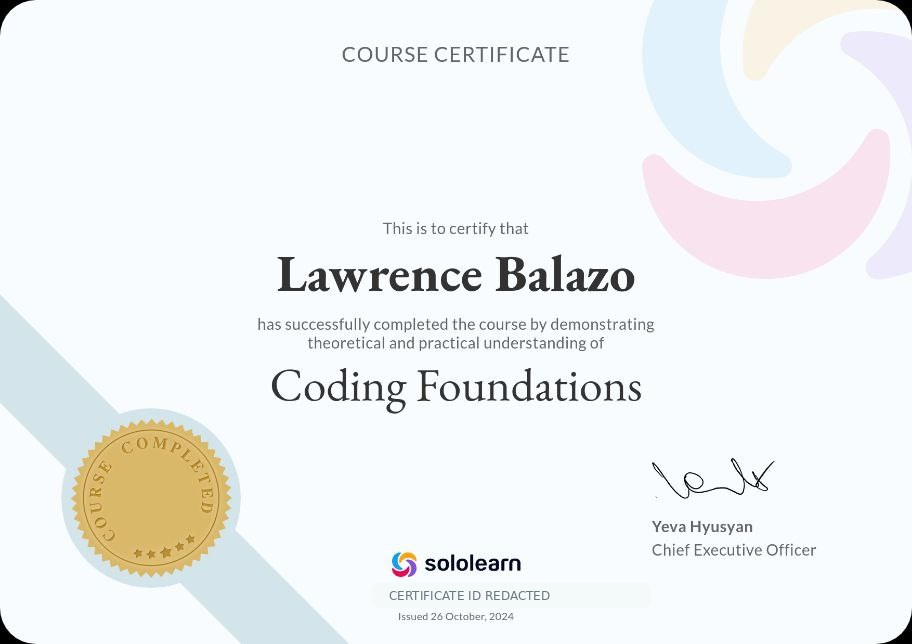
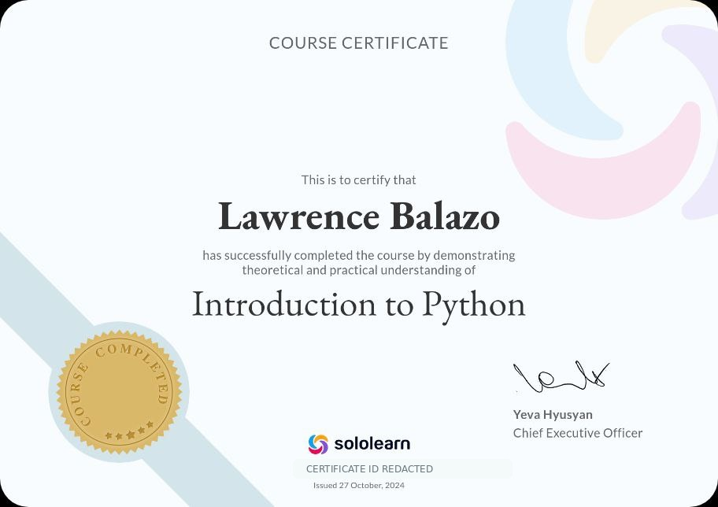

Game Design
Concepts, mechanics, levels, player choices, and player experiences.
INFORMATION SYSTEMS • GAME DEVELOPMENT
Aspiring Junior Game Developer
I am developing the skills to turn creative ideas into playable experiences through game design, gameplay programming, and problem-solving.
01 / PROFESSIONAL PROFILE
I am a Bachelor of Science in Information Systems graduate aspiring to begin a career in game development, with a particular interest in game design and gameplay programming.
I enjoy the process of turning an idea into something interactive. My current work focuses on game concepts, gameplay mechanics, player choices, programming, debugging, and logical problem-solving.
My long-term goal is to combine creativity and programming to create games that entertain, challenge, connect with, and remain memorable for players.
Concepts, mechanics, levels, player choices, and player experiences.
Interactive systems, input handling, game logic, state changes, and player interactions.
Debugging, testing, tracing logic, and finding practical ways to make systems work.
02 / WORK SAMPLES
Early projects that show how I approach interactive systems, programming logic, and game-oriented problem-solving.
WEB GAME PROTOTYPE
An early browser-based game prototype where player choices lead to randomized outcomes. The project uses health, coins, score, win/lose conditions, restart logic, and interactive UI.
C CONSOLE GAME
A 5×5 console navigation game. The player hunts for a chosen character while managing three lives and responding to movement, boundary, and invalid-input conditions.
C GAME SYSTEM
An early RPG character creation prototype where player choices determine class, weapon, focus, and starting attributes. It demonstrates branching game systems and basic character-stat design.
03 / EVIDENCE & IMPACT
Short examples showing how I approached a task, what I built, and what I learned from it.
04 / CREDENTIALS
Course certificates included as supporting evidence of continued learning.
SOLOLEARN
Course certificate • Issued October 26, 2024
Certificate ID redacted for public sharing.
SOLOLEARN
Course certificate • Issued October 27, 2024
Certificate ID redacted for public sharing.
05 / PRIVACY & COMPLIANCE
This public e-portfolio is intended for academic and professional presentation. It displays only information needed to identify me, describe my qualifications, and provide a means of professional contact.
Guided by Republic Act No. 10173 (Data Privacy Act of 2012) and the course requirement for privacy-safe, redacted portfolio content.
06 / RESUME
A concise, role-focused résumé covering education, technical skills, projects, credentials, and career objective.
07 / CONTACT
I am open to entry-level opportunities, collaborative learning, and projects that help me grow as a game designer and gameplay programmer.
balazolawrence@gmail.comThis e-portfolio is published for academic and professional presentation. Personal information shown here is limited to information necessary to identify and contact me and to demonstrate my qualifications. Home address, government or student IDs, certificate IDs, and other unnecessary sensitive information are omitted or redacted. My profile photo and project/certificate materials are used for this portfolio purpose. For questions, corrections, or privacy concerns about information presented here, please contact me at balazolawrence@gmail.com.
Privacy compliance note: This portfolio follows the course requirement to avoid personal IDs, addresses, and confidential data and is guided by Republic Act No. 10173 (Data Privacy Act of 2012).